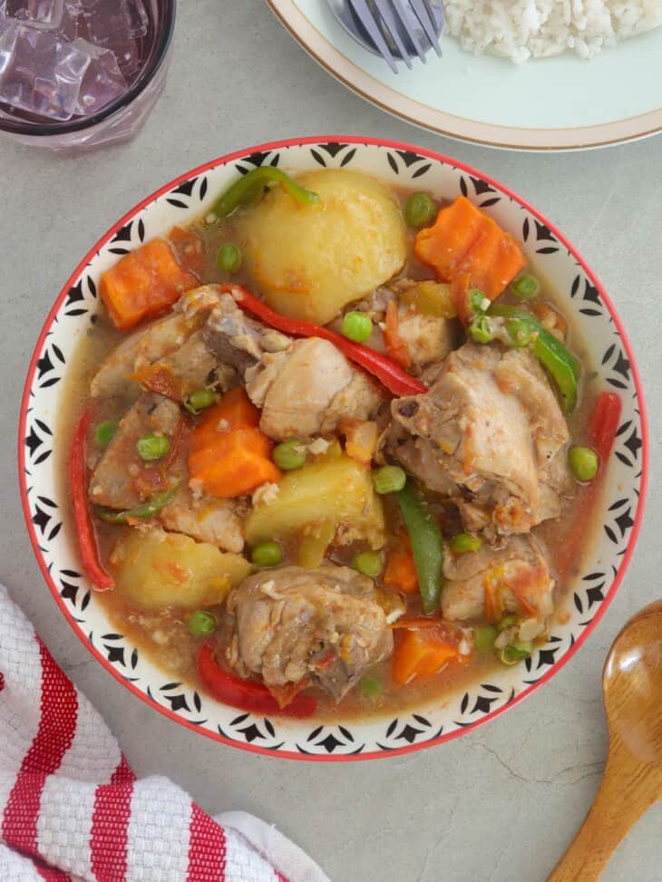

Chicken Afritada

Description
A classic Filipino stew made of beef, pork, chicken, or fish braised in tomato sauce with potatoes, carrots, and bell peppers. It is a flavorful and hearty dish for family meals and special occasions.
Ingredients
- Aromatics
- Chicken
- Roma Tomatoes
- Vegetables
- Fish sauce
- Water
- Salt and pepper
Steps
- Brown potatoes and carrots in hot oil. Remove and set aside. Saute bell peppers until lightly browned. Remove from pan and drain on paper towels.
- Add onions and garlic and cook until softened. Add chicken and lightly brown.
- Add tomatoes and cook until softened and release juice. Add fish sauce and simmer for a few seconds.
- Add water and bring to a boil. Lower the heat, cover, and cook until the chicken is tender and the sauce slightly reduces. Add potatoes and carrots and continue to cook until fork-tender.
- Add bell peppers and sweet peas and cook until heated through and tender-crisp.
- Continue to simmer until the sauce is thickened to the desired consistency. Season with salt and pepper to taste.